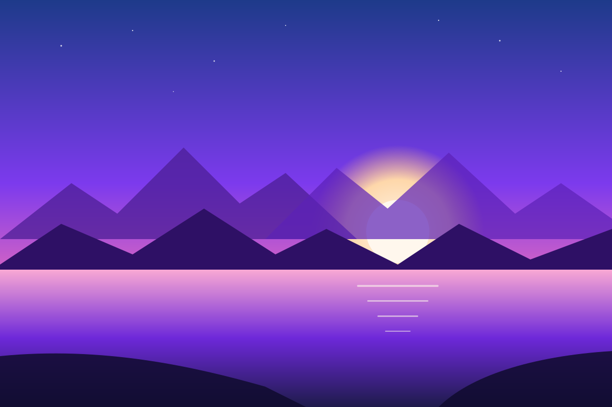

Your private desktop in the browser. Everything you create lives in this profile, on this device.
help| Action | Shortcut |
|---|---|
| Command palette | Ctrl K |
| Open dock app 1–7 | Alt 1–7 |
| Snap window left / right | Alt ← / → |
| Lock profile | Ctrl Alt L |
$ cd ~/Documents && ls Projects Meeting notes Q4-plan.md
Tip: Back up a profile anytime from Settings → Storage & Backup.